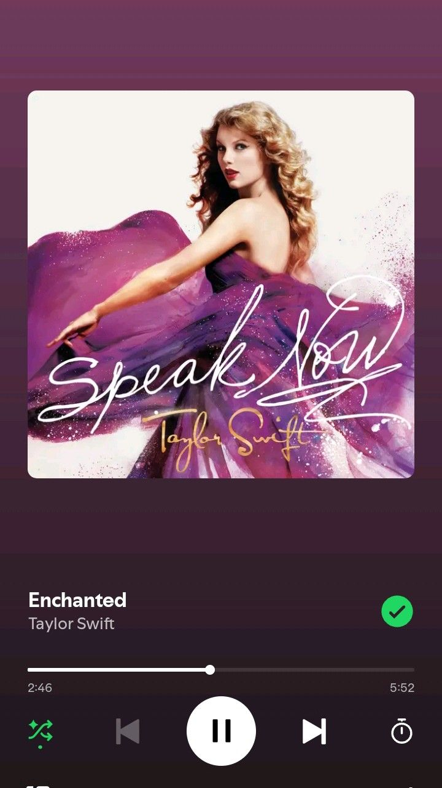

Halo, Selamat Datang!
Tentang Website Ini 👋
Selamat datang di website pribadiku! Website ini saya buat sebagai salah satu tugas untuk Mata Pelajaran Pilihan (MAPIL). Senang sekali bisa berbagi karya digital sederhana ini kepadamu!
Connect with me! ✨
@s.faee_📋 Tentang Saya
Halo! Nama saya Syifa Hani Fanisa, biasa dipanggil Syifa. Saya lahir dan dibesarkan di Klambir Lima, Medan, pada 21 Juli 2010. Sejak kecil, saya memiliki ketertarikan yang besar pada dunia seni visual dan teknologi.
Saat ini, saya sedang menempuh pendidikan di SMKN 1 Cilegon dengan mengambil jurusan Rekayasa Perangkat Lunak (RPL). Melalui jurusan ini, saya bisa menyalurkan minat saya untuk mengeksplorasi dunia digital secara lebih mendalam.
Di luar aktivitas sekolah, saya suka menghabiskan waktu dengan mendengarkan musik. Selain itu, saya juga aktif mengasah kemampuan dengan belajar membuat website secara otodidak. Bagi saya, memadukan estetika seni visual ke dalam baris kode pemrograman adalah hal yang sangat menyenangkan.
🎵 Musik Favorit

Ariana Grande
"Past Life"

Taylor Swift
"Enchanted"